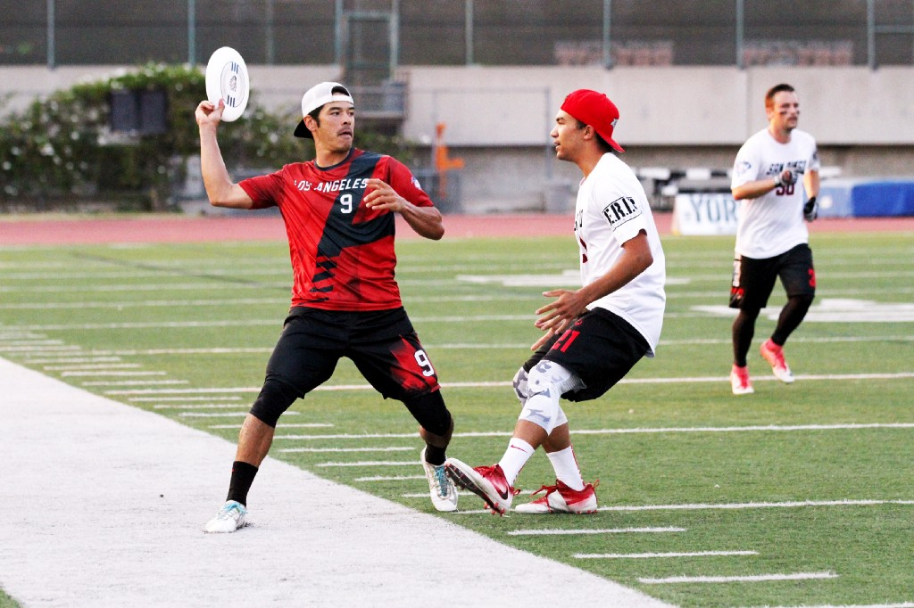

Football
I played football for over 10 years with De La Salle FC.
The majority of my success came in the final seasons where we won two League Cups, the Youth A League and reached the semi final of the Munster Cup.
I also played for the Waterford Youth Development Squad where we won the All Ireland.
Ultimate Frisbee
My first venture into Ultimate Frisbee was P.E. in Secondary School but I have begun training since I have come to college.
Ultimate is a refreshing change of pace from the seriousness that I often find permeates football. I have my friends and I enjoy keeping fit in such a fun environment.
